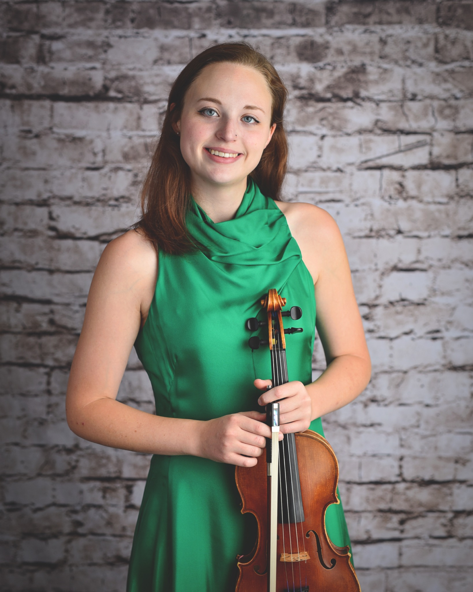

Madison Jones
Violin
A native of Lexington and a veteran of both the CKYO and UK Symphony, Madison Jones began her violin studies at age five. Her professional experience includes guest appearances with the Chamber Orchestra of Louisville and Cave Run Symphony. She currently serves as Assistant Concertmaster of the Lexington Philharmonic, is a member of the Lexington Chamber Orchestra, maintains a private studio, and performs as a freelance musician.